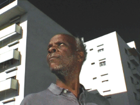

|
JUVENTUDE EM MARCHA (Collossal Youth)
Pedro Costa | P 2006 | 155 Min.
Format: 35mm
Material: DV
Originalsprache: Portugiesisch
Drehbuch: Pedro Costa
Kamera: Pedro Costa, Leonardo Simoes
Schnitt: Pedro Marques
Ton: Oliver Blanc
Mit Ventura, Vanda Duarte, Beatriz Duarte, Gustavo Sumpta, Cila Cardoso, Isabel Cardoso Alberto Barros
Produktion: Contracosta Produções
Die Umsiedelung der Einwanderer der Kapverdischen Inseln aus dem Lissabonner Armenviertel Fontainhas in neu errichtete Wohnsiedlungen ist der rote Faden von Costas fast schon zynischer Geschichte von der „kolossalen“ Jugend. Der Film begleitet Ventura bei seinen Wanderungen zwischen den beiden Welten. Halbdokumentarisch begegnet der Film den Figuren aus den früheren Filmen des "Vanda-Zyklus", wie der von ihrer Drogenabhängigkeit sichtlich gezeichneten Vanda. In einem ungeschnittenen Video-Tableau sieht man sie in ihrem engen Zimmer sitzen, rauchen, während sie von ihrem Leben erzählt. Wenn Ventura in den Außenraum gelangt, schiebt sich sein dunkler Schädel vor die strahlend weißen Fassaden der frisch gekalkten Hochhaussiedlung. Costas Film wartet mit stilistischer Kamerastrenge auf, die den Figuren umso mehr Platz für ihre Erzählungen und ihre physische Präsenz gibt. Die fotografischen Einstellungen entwickeln einen wahren Bildersog, bleiben dabei unwirklich und fremd und zeugen von einer eigenartigen Faszination für das Unbehagliche.
Nha cretcheu, my love,
being together again will make our lives beautiful
for another thirty years. (Auszug aus einem Brief Venturas an Vanda)
Pedro Costa, geb. 1959 in Lissabon. Studiert Regie und Schnitt an der Filmhochschule von Lissabon und arbeitet als Regieassistent bei verschiedenen Produktionen. Dreht im Alter von 30 Jahren seinen ersten Film und gilt seither als radikalster und eigenwilligster Filmemachern seiner Generation. Mit "Casa de lava" beginnt seine Auseinandersetzung mit den gesellschaftlich Ausgestoßenen und den Capverdischen Einwanderern im Lissaboner Armenviertel Fontainhas seines "Vanda-Zyklus'".
Filme: O sangue 1990 | Casa de lava 1994 | Ossos 1997 | No quarto da Vanda 2000 | Où gît votre sourire enfoui? 2001 | 6 Bagatelas (2001 | Ne change rien 2005 Juventude em marcha 2006
zurück
|